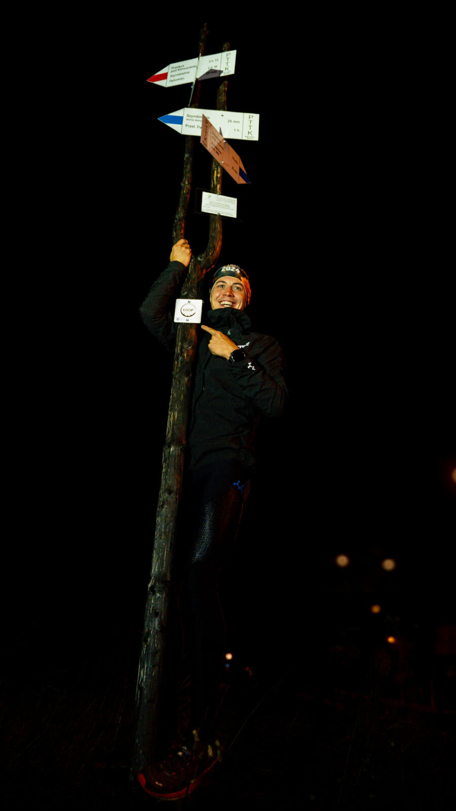
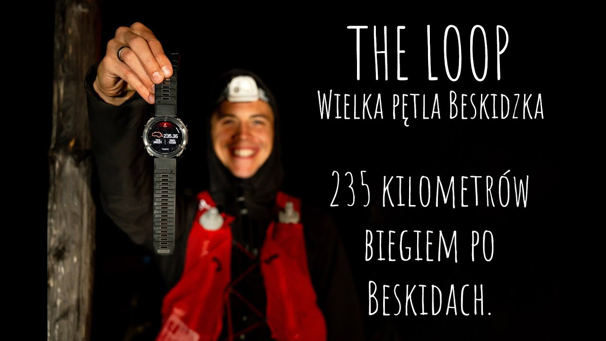

12–13 października 2024, Beskidy
The Loop
Wielka Pętla Beskidzka z Bielska-Białej i z powrotem. Szlak, który zwykle przechodzi się w 8–10 dni, przebiegłem w niecałe 43 godziny.
235km
42:53:24
- Start z Bielska-Białej
- 5:04
- Przewyższenie
- 11 437 m
- Plecak na starcie
- 7 kg
Budzik o 3:00
12 października o 3:00 zadzwonił budzik, o 5:04 ruszyłem z Bielska-Białej. Trener napisał mi, że stać mnie na 38 godzin, ja celowałem w okolice 40. Przygotowałem arkusz ze wszystkim: międzyczasami, sklepami, godzinami otwarcia i ofertą pizzerii, do której miałem dzwonić.
Początek był mglisty, widoczność na 2–3 metry. Nowy zegarek zawiesił się jeszcze przed startem, więc prawie do mety bałem się go dotykać. Na rozstajach kilka razy musiałem wracać na właściwy szlak.
W Ślemieniu czekała pizzeria, bo pizza w ultra zawsze mi wchodzi. Na Markowych Szczawinach schronisko tętniło życiem jak knajpa w piątkowy wieczór, a ja przebierałem się na noc i ruszałem na Babią Górę.
42:53:24
Na mecie zegar zatrzymał się na 42:53:24. To najszybszy znany czas trasy w kategorii ze wsparciem, szybszy także od najlepszego przejścia bez wsparcia.

Bielsko-Biała, start i meta
„Początek jest mglisty. Widoczność na 2-3 metry, do tego światło czołówki oświetlające mgłę sprawia, że przed oczyma latają mi miliony małych kropeczek.”
„W ultra piękne jest oszukiwanie głowy.”

FilmThe Loop: Wielka Pętla Beskidzka235 kilometrów samotnego biegu po górachNagroda, 16. Przegląd Filmów Górskich, Wadowice 2026
Porozmawiajmy o tym, co możemy zrobić razem.
Szukasz partnera dla swojej marki lub prelegenta na wydarzenie? Napisz kilka słów o swoim pomyśle. Dopasujemy formę współpracy do Twoich potrzeb.